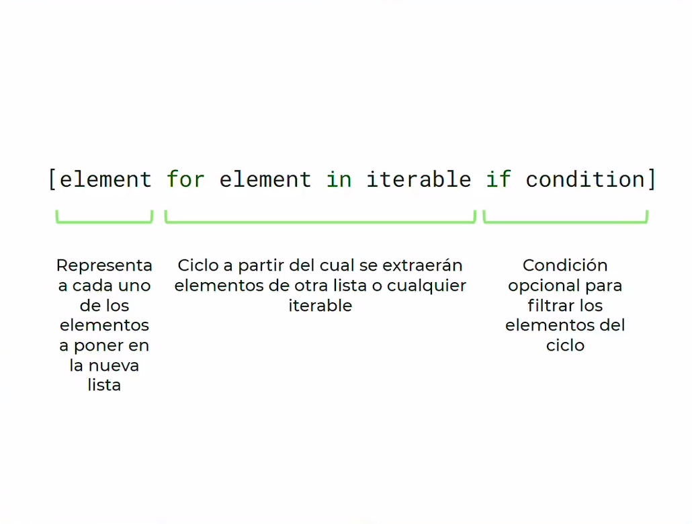
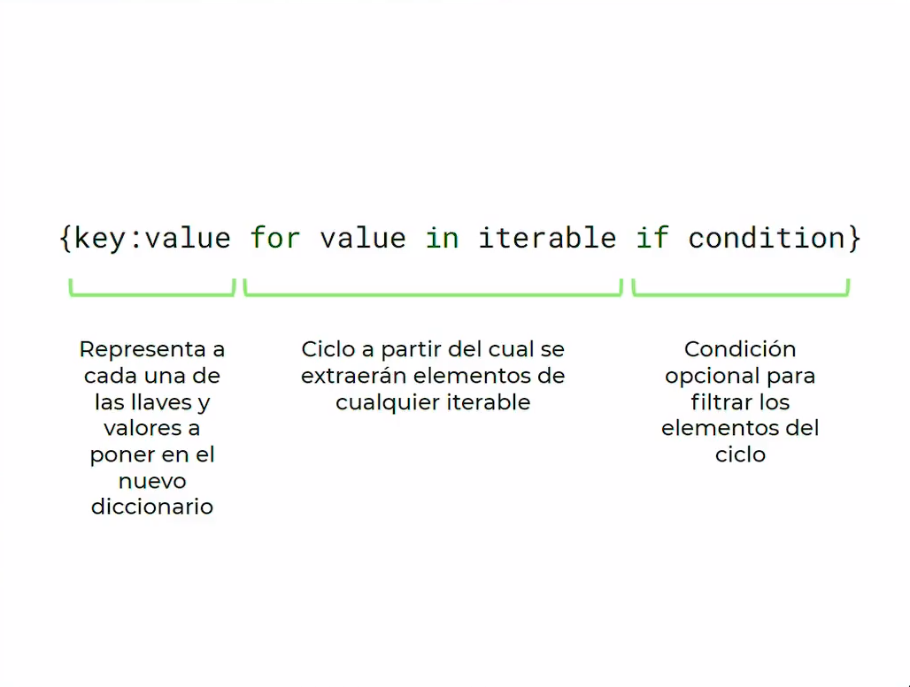
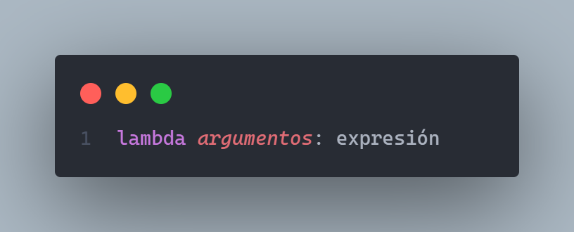
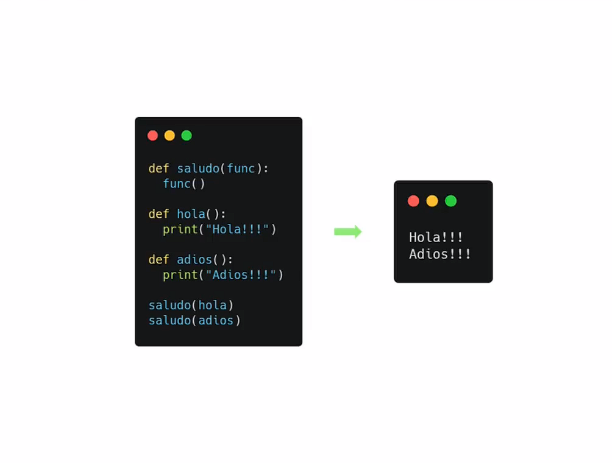
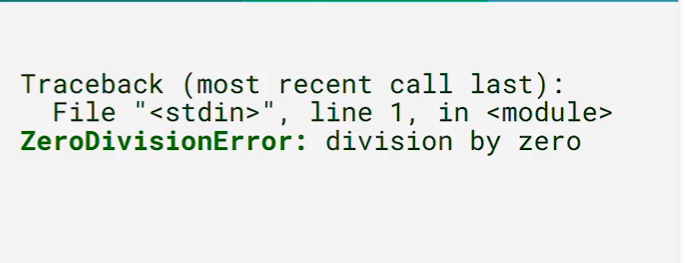
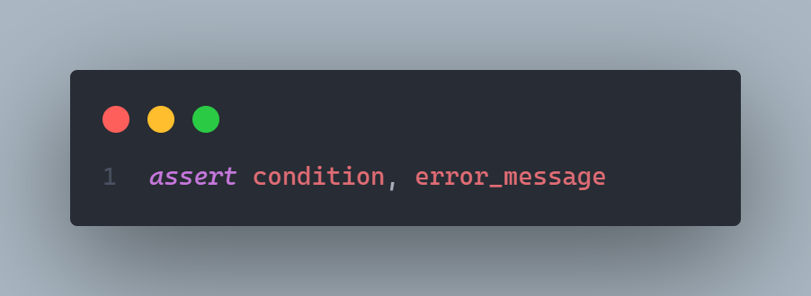

Python Intermedio
Última edición el día 2022-04-22 a las 12:53.
Table de contenidos de la pagina
El zen de python
Bello es mejor que feo
Explicito es mejor que implícito (para que otro entienda)
Simple es mejor que complejo (pocas lineas que resuelve)
Complejo es mejor que complicado (extenderlo si es necesario)
Plano es mejor que anidado (cuando hacemos muchas dependencias, código a la derecha)
Espacio es mejor que denso (Identación obligatoria para mantener el orden 4 espacios)
Legibilidad es importante (otros desarrolladores puedan leer el código)
Los casos especiales no son lo suficientemente especiales como para romper las reglas.Sin embargo la practicidad le gana a la pureza. (equilibrio entre pragmatismo y pythonismo)
Los errores nunca deberían pasar silenciosamente. A menos que se silencien explícitamente. (Manejarlos es prioritario y deben ser controlados)
Frente a la ambigüedad, evitar la tentación de adivinar. (No algoritmos ambiguos, única interpretación)
Debería haber una, y preferiblemente solo una, manera obvia de hacerlo. A pesar de que esa manera no sea obvia a menos que seas holandés.
Ahora es mejor que nunca. A pesar de que nunca es muchas veces mejor que ahora mismo. (Hacerlo cuanto antes y no dejar para mañana, Si tenemos poco tiempo y desarrollamos mal código lo dejamos para después)
Si la implementación es difícil de explicar, es una mala idea. Si la implementación es fácil de explicar, puede que sea una buena idea
Los espacios de nombres son una gran idea, tengamos mas de esos
La documentación
PEP
Documentos de guiá de estilo. El mas utilizado y las buenas practicas están en PEP8
Que es un modulo?
Es código escrito por otra persona, que nos sirve para resolver un problema de manera rápida No reinventar la rueda, no realizar la solución que alguien mas hizo. Ej: Random (números aleatorios)
Entorno virtual
Un entorno virtual es como tener un entorno de instalación de python independiente por cada proyecto que tengamos y que tienen sus módulos independientes. Poder probar diferentes proyectos con módulos con versiones diferente.
Para crear el entorno virtual utilizamos el comando:
python -m venv venv
Para activar el entorno virtual utilizamos el comando:
windows (CMD/Powershell)
.\venv\Scripts\activate
macOs y Linux
source venv/bin/activate
Para salir del entorno virtual utilizamos el comando
deactivate
Nota
Poner la carpeta venv del entorno virtual en el .gitignore
PIP
Hay muchos módulos que están en python en su instalación de fabrica. Hay cierto módulos que fueron creados por 3ros y para instalar estos módulos usamos un gestor de dependencias o instalador de paquetes el mas popular en python es pip » package installer for python «.
Módulos populares
Algunos módulos comunes:
Requests
BeautifulSoup4
Pandas
Numpy
Pytest
Para listar los módulos utilizamos el comando
pip freeze
Para instalar un modulo utilizamos el comando
pip install pandas
Para poder compartir un proyecto e indicar las dependencias del mismo necesitamos pasar las dependencias de nuestro entorno virtual a un archivo, esto lo hacemos con el siguiente comando:
pip freeze > requirements.txt
Para instalar las dependencias desde un archivo utilizamos el comando
pip install -r requirements.txt
Listas y diccionarios anidados
super_list = [
{"firstname": "Facundo", "lastname": "García"},
{"firstname": "Miguel", "lastname": "Torres"},
{"firstname": "Pepe", "lastname": "Rodelo"},
{"firstname": "Susana", "lastname": "Martinez"},
{"firstname": "José", "lastname": "García"},
]
super_dict = {
"natural_nums": [1, 2, 3, 4, 5],
"integer_nums": [-1, -2, 0, 1, 2],
"floating_nums": [1.1, 4.5, 6.43]
}
for key, value in super_dict.items():
print(key, "-", value)
print(" ")
for i in super_list:
print(i)
List comprehensions
{kind=link}
Nota
El if es completamente opcional
Se lee «Para cada elemento en el iterable, guardo el elemento en la lista, si se cumple la condición»
LIMIT = 100
squares = [i**2 for i in range(1,LIMIT+1) if i %3 != 0 ]
print(squares)
Dictionary comprehensions
{kind=link}
Nota
El if es completamente opcional
Se lee «Para cada elemento en el iterable, Coloco una llave y un valor, si se cumple la condición»
LIMIT = 100
my_dict = { i: i**3 for i in range(1,LIMIT+1) if i % 3 != 0 }
print(my_dict)
lambda functions
Funciones sin nombre, o funciones anónimas. Son funciones sin identificador. Tienen la siguiente estructura
{kind=link}
Nota
Puede tener los argumentos que necesitemos, pero solo una expresión (un linea de código)
palindrome = lambda string: string == string[::-1]
print(palindrome)
Funciones de orden superior
Es una función que recibe como parámetro a otra función
{kind=link}
Filter
Me permite filtrar elementos de un iterable
my_list = [1,4,5,6,9,13,19,21]
odd = list(filter(lambda x: x%2 != 0, my_list))
print(odd)
Map
Me permite transformar los elementos de una lista
my_list = [1,2,3,4,5]
squares = list(map(lambda x: x**2, my_list))
Reduce
Reduce los valores de la lista a un único valor
from functools import reduce
my_list = [2, 2, 2, 2, 2]
all_multiplied = reduce(lambda a,b: a*b, my_list)
Los errores en el código
Errores de Sintaxis
Cuando python nos avisa que escribimos mal una palabra clave. Python no ejecuta.
Exceptions
Suceden en algún punto del programa que hace que quiebre la lógica. Python lo hace en una linea especifica y las lineas anteriores si se ejecutan.
Python eleva una excepción para cortar el proceso. Python crea un objeto de typo excepción y lo va moviendo en los bloques desde dentro hacia afuera.
Las excepciones mas comunes son:
KeyboardInterrupt : Cuando pulsamos ctrl + c en la consola de python. Cortamos el proceso de ejecución de python.
keyError : Intentamos acceder a una llave en un diccionario y esta no existe.
IndexError : Cuando intentamos acceder al indice en una lista que no existe.
FileNoteFoundError : Cuando intentamos abrir un archivo que no existe.
ZeroDivisionError : Sucede cuando intentamos dividir un numero entre cero.
ImportError : Intentamos importar un modulo y hay un error en este modulo.
TraceBack
Es el mensaje de error que nos muestra python. Se lee desde la ultima linea hasta la primera.
{kind=link}
Vemos que tipo de excepción es y un pequeño resumen.
La line anterior: En que archivo ocurrió, la linea y que modulo (<stdin> consola interactiva)
La anterior anterior: La traza del error de donde parte. Si el error no es capturado python eleva el error a la función mas arriba.
Debugging
Para hacer debugging en vscode con python tenemos que tener instalada la extension
ms-python.pythonLuego vamos a la barra lateral izquierda y seleccionamos el botón run and debug
Y Presionar el botón Run and Debug
Podemos establecer los breakpoints en el código haciendo click a lado del numero de la linea
Podemos avanzar linea por linea entrar a una función, reiniciar la depuración, continuar o pararla.
Manejo de excepciones
try, except
Por ejemplo cuando queremos ingresar números en una función que no los esperaba
def palindrome(string):
return string == string[::-1]
try:
print(palindrome(1))
except TypeError:
print("Solo se pueden ingresar strings")
Atrapo la excepción TypeError e indico lo que sucede después de la excepción
raise
Puede ser que tengamos un error, pero python no lo detecta como tal, raise eleva el error. Ej: evitar que se ingresen cadenas vaciás. Raise eleva el error.
def palindrome(string):
try:
if len(string) == 0:
raise ValueError("No se puede ingresar una cadena vacía")
return string == string[::-1]
except ValueError as ve:
print(ve)
return False
try:
print(palindrome(""))
except TypeError:
print("Solo se pueden ingresar strings")
Finally
Se usa al final e try except para cerrar un archivo, conexión a BD o liberar recursos externos. (No se usa generalmente)
try:
f = open("archivo.txt")
# hacer cualquier cosa con nuestro archivo
finally:
f.close() #Si hay algún error o no se va a cerrar el archivo.
Assert statements
Es una manera mas extravagante de manejar los errores. Son expresiones para manejar el flujo de nuestro programa.
{kind=link}
Nota
Se lee «Afirmo que esta condición es verdadera si no, imprimo mensaje de error»
def palindrome(string):
assert len(string) > 0, 'No se puede ingresar una cadena vaciá'
return string == string[::-1]
print(palindrome(""))
# AssertionError: No se puede ingresar una cadena vaciá
Archivos
En python hay 3 modos de apertura de un archivo de texto
R -> lectura
W -> Escritura (sobrescribe)
A -> Escritura (Agregar al final)
with open("./ruta/del/archiv.txt", "r") as f:
with: es un manejador contextual. Controla el flujo de nuestro archivo.
open: función interna para abrir el archivo. Con 2 parámetros, la ruta y el modo de apertura
as: para darle un nombre mas simple al archivo, en este caso es f.
#Función para leer un archivo
def read():
numbers = []
with open('./archivos/numbers.txt', 'r', encoding="utf-8") as f:
for line in f:
numbers.append(int(line))
print(numbers)
#Función para escribir un archivo
def write():
names = ["Maria", "Fernanda"]
with open('./archivos/names.txt', 'a', encoding="utf-8") as f:
for name in names:
f.write(name)
f.write("\n")